1.0 Categorical Data is Everywhere
What is categorical data?
- I use the term categorical data analysis to refer broadly to the analysis of dependent variables that are not continuous (interval-ratio)
- Although we also cover complexities of analyzing categorical independent variables
- Examples: binary (2 categories), ordinal (3+ ordered categories), nominal (3+ unordered categories), count (summation of binary choices), censored, etc.
- These are limited dependent variables in that they do not have full continuous information
- E.g., measured at a more blunt measurement level
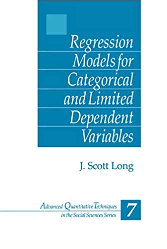
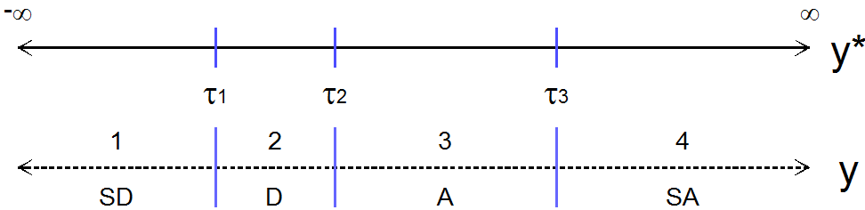
Introduction
- Almost all health and social science graduate programs teach linear regression (or the often equivalent ANOVA)
- Many (most?) do not require a class beyond linear regression
- Unfortunately, most health and social science variables are not continuous and thus linear regression is problematic / not ideal to model these variables as outcomes
- E.g., Some inherently categorical data analysis questions:
- Which political candidate will win the next election?
- Is a vaccine effective at preventing disease and/or death?
- How many publications does it take to receive tenure?
- How many drinks does the average person consume per week?
- In addition, even when a construct could be continuous, we typically measure things as categorical (e.g., a survey question)
- E.g., Some inherently categorical data analysis questions:
Examples below
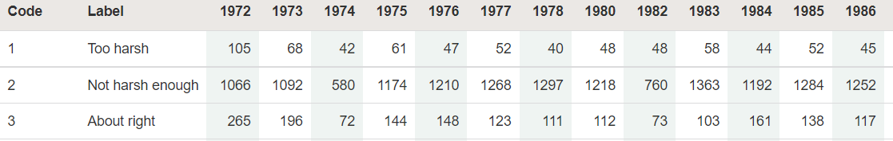
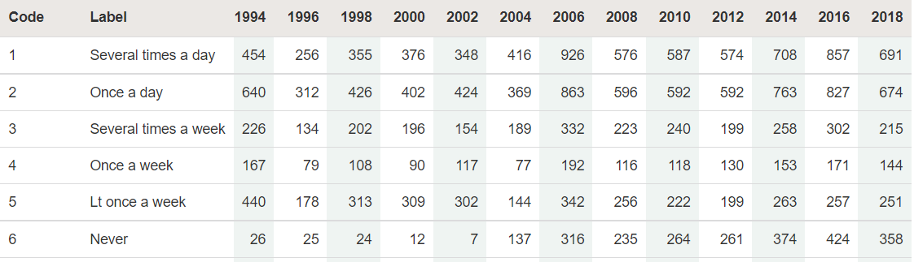
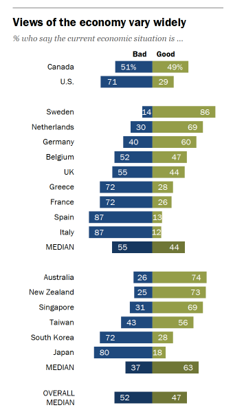
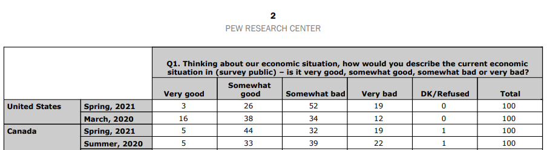
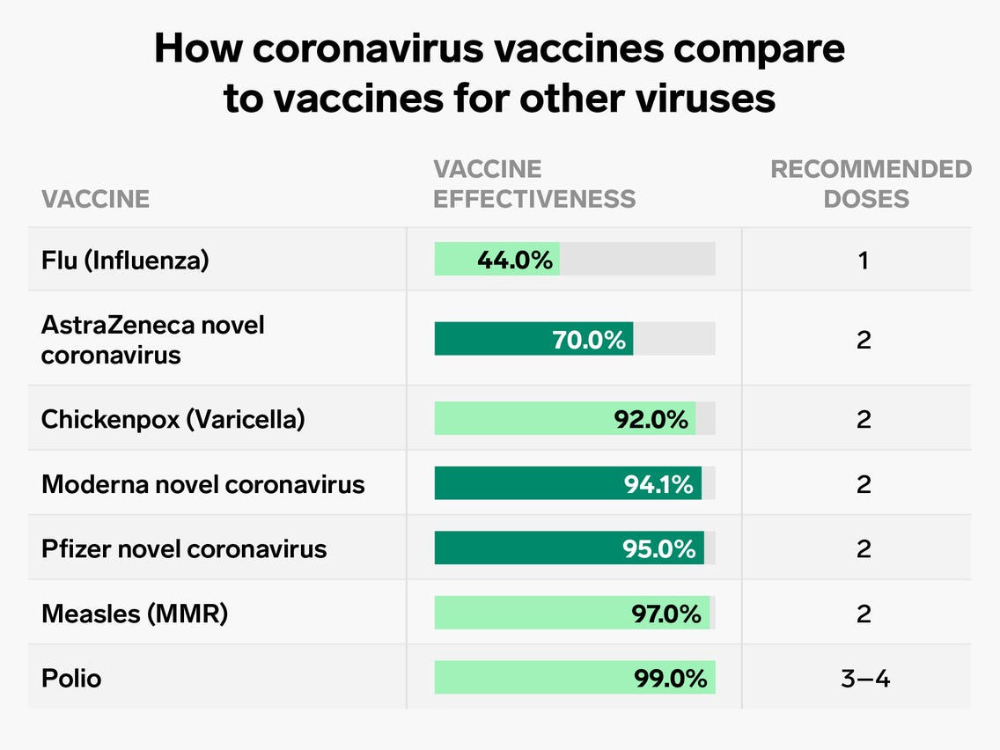
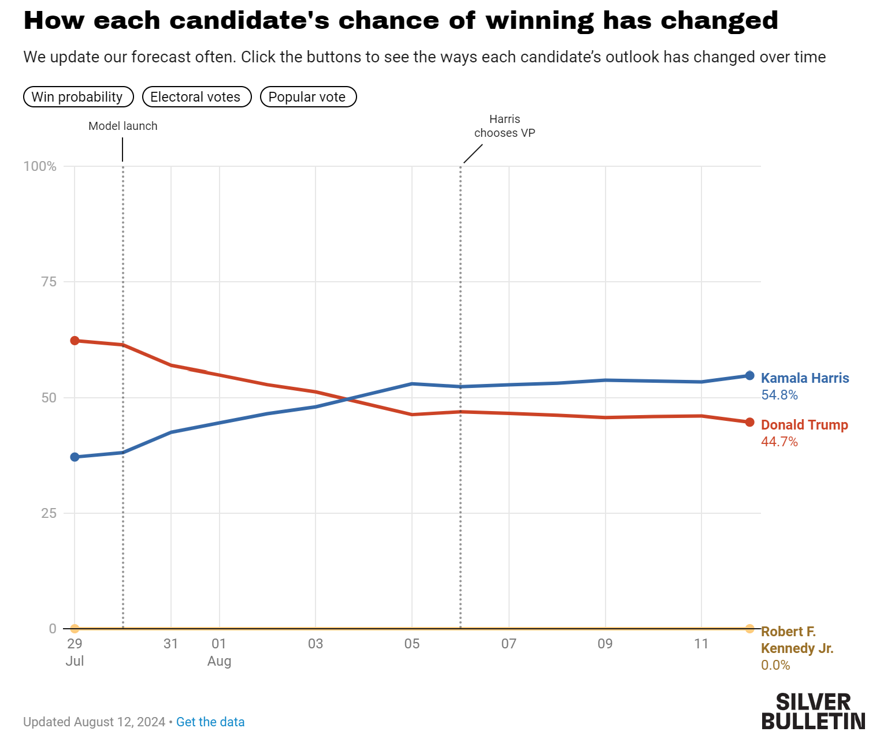
Categorical data analysis? Really a class on nonlinear effects
- Goal of seminar is to provide frameworks for handling nonlinear effects in any model
- Linear regression models are sometimes nonlinear; they are sometimes interactive; they are sometimes both
- The methods covered in this seminar can be fruitfully applied to nonlinear linear regression models
- Models for categorical dependent variables are inherently nonlinear and are inherently interactive
- Linear regression models are sometimes nonlinear; they are sometimes interactive; they are sometimes both
- With linear effects, the work is largely done when you estimate the model
- With nonlinear effects, the work begins once you have estimated the model
“Think how hard physics would be if particles could think” – Murray Gell-Mann
Meaningful interpretations
“Unfortunately, all too often when these models are used, the substantive meaning of the parameter is incompletely explained, incorrectly explained, or simply ignored. Sometimes only the statistical significance or possibly the sign is mentioned.” (Long 1997 p. xxiii)
“…several different interpretation techniques were applied in the reviewed articles… The most common strategy was to simply look at the p-values and the sign of the coefficient to infer the direction of the effect, ignoring both the strength and form of the relationship.” (Ronkko et al. 2021 p.24)
- We will learn how to tell an understandable story with your data in the presence of complex nonlinearities and interactive effects
- Interpretations that go beyond signs and stars
- Describing effects in the metrics of interest
- Visualizing results
- Etc.
- Why does nonlinearity make things so hard (and realistic)?
Linear model
\[y = \alpha + \beta x_{i} + \gamma d_{i}\]
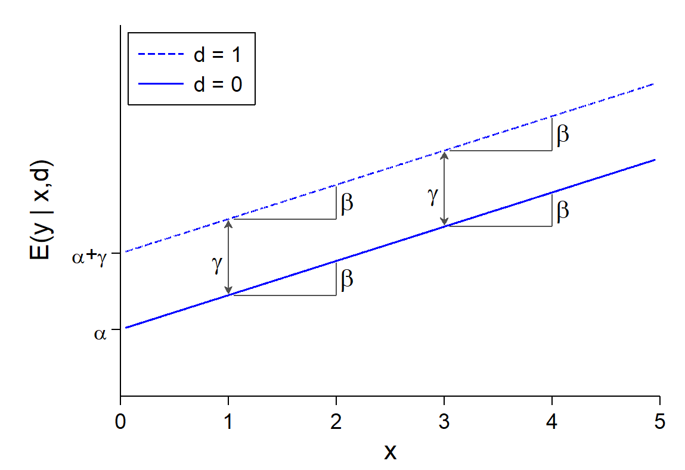
Inherently nonlinear model
\[y = \frac{\exp(\alpha + \beta x + \gamma d)}{1 + \exp(\alpha + \beta x + \gamma d)}\]
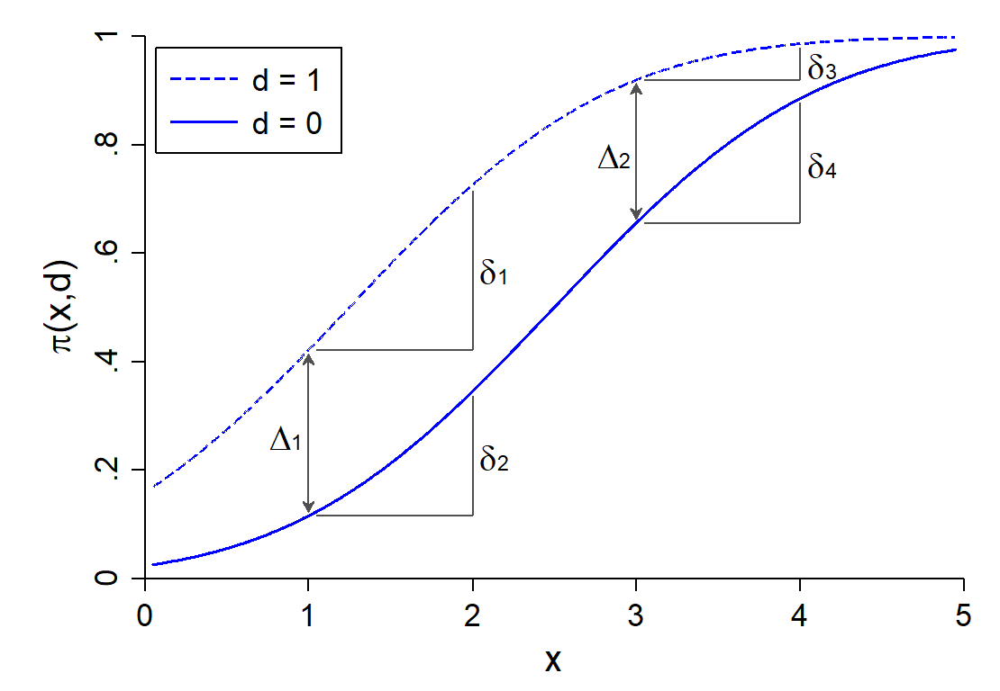
Topics considered
- Linear regression refresher
- Plus a primer on controls and causality
- Nonlinearities and categorical independent variables
- Nonlinear linear regression models
- Interpretation with predictions and marginal effects
- Inequality statistics
- Binary outcome models (logit and probit)
- Odds ratios, risk ratios, predictions, marginal effects, ideal types
- Nominal outcome models (multinomial logit)
- Ordinal outcome models (ordinal logit and probit, generalized ordered logit)
- Model assumptions and comparisons
- Count outcome models (Poisson regression, negative binomial, ZIP/ZINB)
- Predictions for rates/counts, probabilities, ranges
- Model selection
- Statistical moderation and mediation
- Types of interactions
- Comparing effects across models
- Testing and model fit
- Internal, absolute, and relative fit
- Model and effect robustness
Useful extensions once you know categorical
- Other limited dependent variable models
- Censored distributions—e.g., floors and ceilings
- Proportions (bounded at 0 and 1)
- Censored distributions—e.g., floors and ceilings
- Multilevel and longitudinal models
- Latent variable models
- Binary, ordinal, or nominal items
- Continuous and nominal latent variables
- Binary, ordinal, or nominal items
- Network analysis
- Machine learning
- Often 0/1 prediction tasks
- E.g., LASSO; random forests
- Often 0/1 prediction tasks
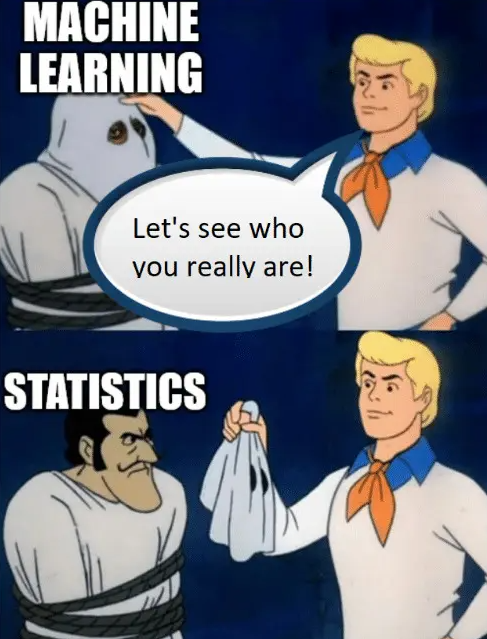
Recommended books
- For more of the statistical details and backgrounds of the methods we cover:
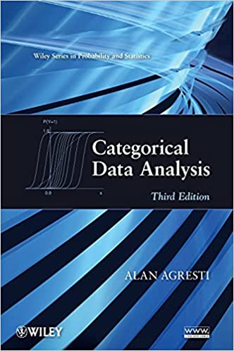
- For more detail on how to do categorical data analysis using Stata or R:
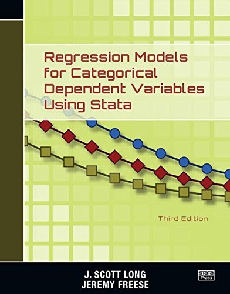
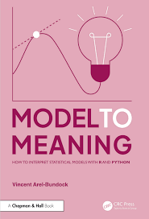